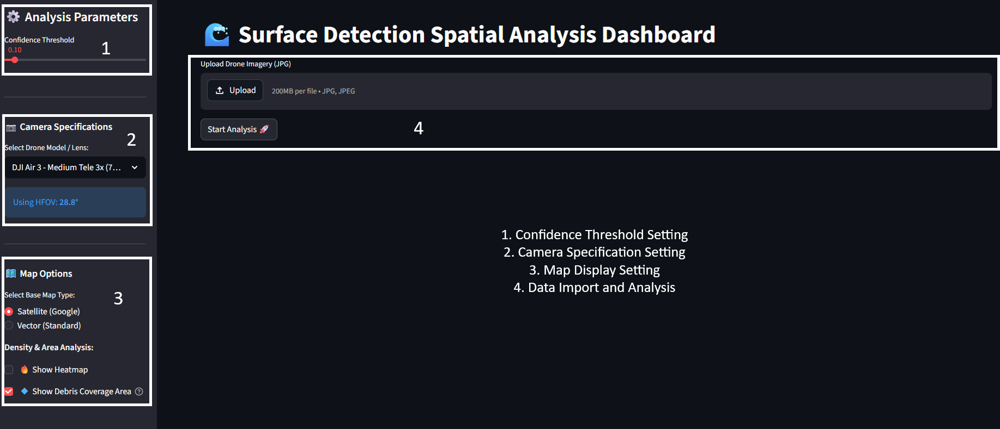
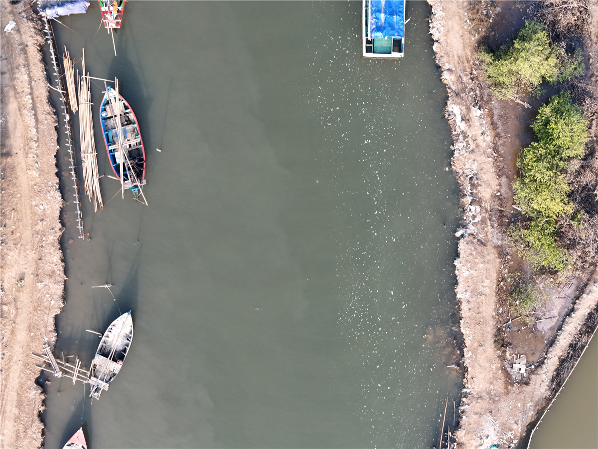
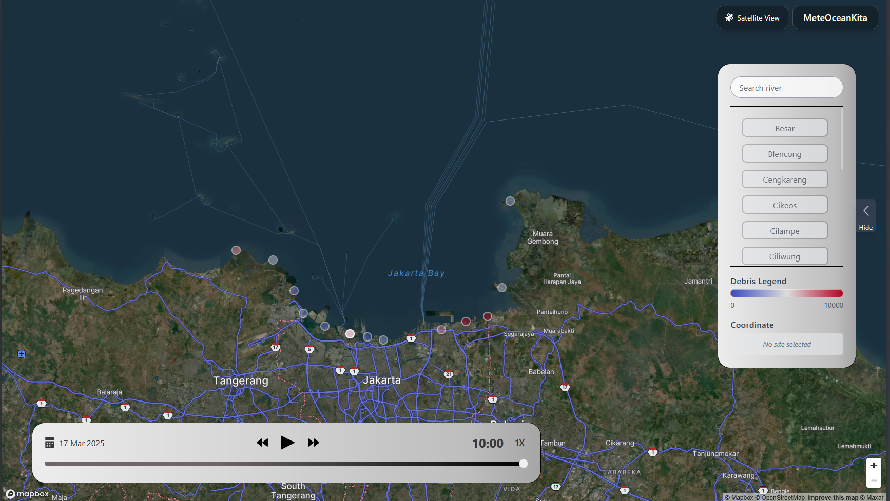
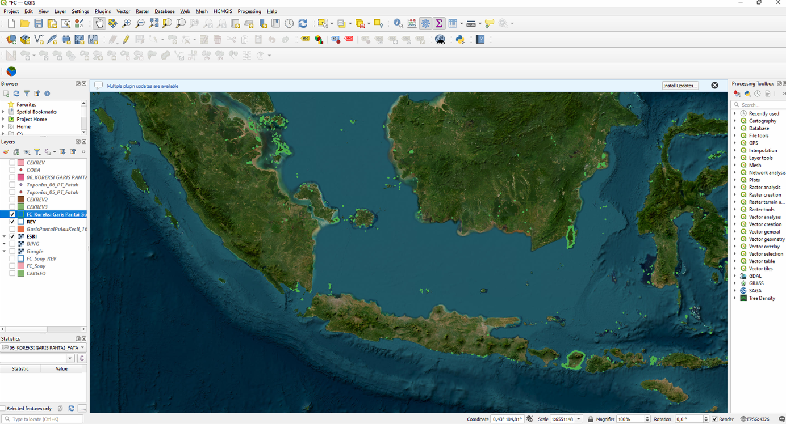
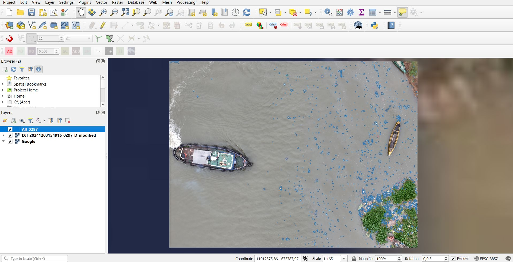
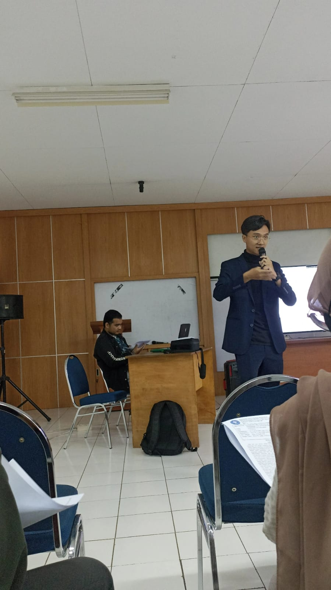

Professional Experience
My journey in mapping the world and building geospatial solutions.

GIS & Remote Sensing Project Development
Contributed to company projects utilizing advanced analytical models and state-of-the-art machine learning techniques. Developed web-based applications to improve field operational efficiency, and managed/optimized local server infrastructure.

Marine Tracker 2.0 Project Manager & Technician
Oversaw spatial data acquisition using drones and CCTV monitoring. Designed a web-based app for automated debris detection using drone imagery. Contributed to AI development via data annotation and collaborated with CQUniversity for data-driven decision-making.

Jakarta River Mouths Survey
Orchestrated and executed comprehensive drone-based field surveys across 13 river mouths in Jakarta, optimizing spatial data collection efficiency.

Global Collaboration
Developed a web-based service for source identification and trajectory forecasting of floating objects by integrating satellite data with open-source oceanographic datasets, supporting marine monitoring.

National Island Inventory Initiative
Conducted high-precision polygon mapping of small Indonesian islands using satellite imagery. Performed geospatial analyses of island morphology and typological classifications for national databases.

Spatial Mapping and Modeling Laboratory
Supported research activities and provided analytical insights and technical guidance for undergraduate and master's research projects in geospatial modeling.

Marine Practical Sessions Instructor
Instructed students in remote sensing for coastal mapping, thermal satellite data for sea surface temperature, and digital image processing. Mentored on benthic habitat identification and marine resource surveys using drones and GIS.